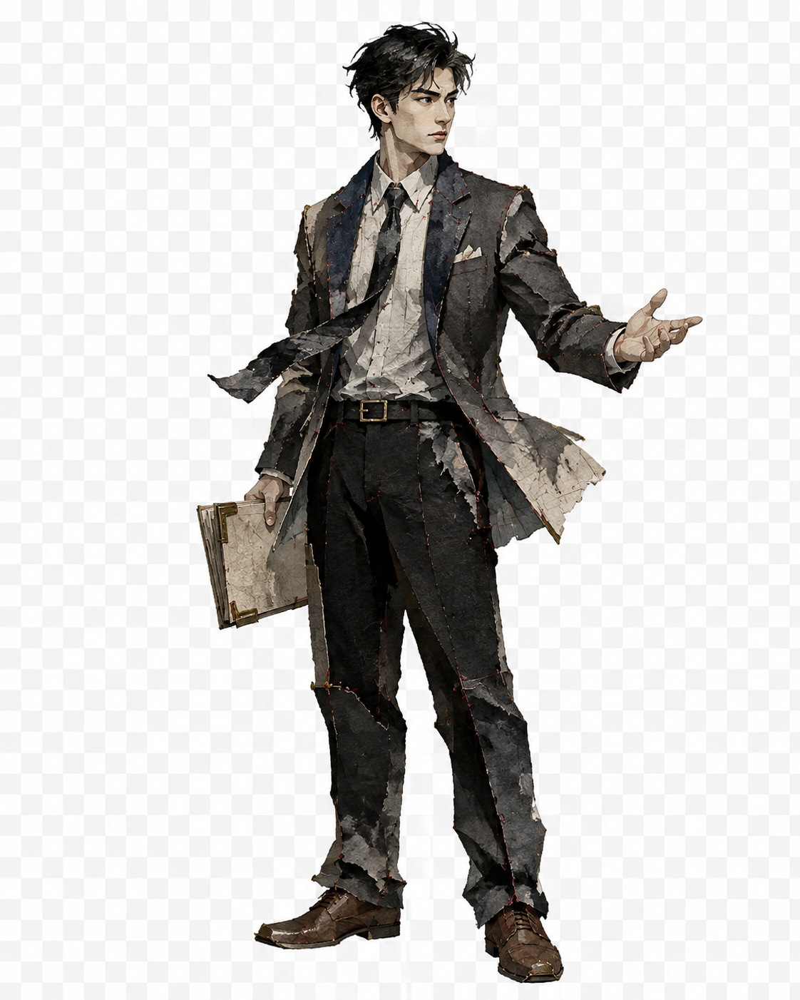
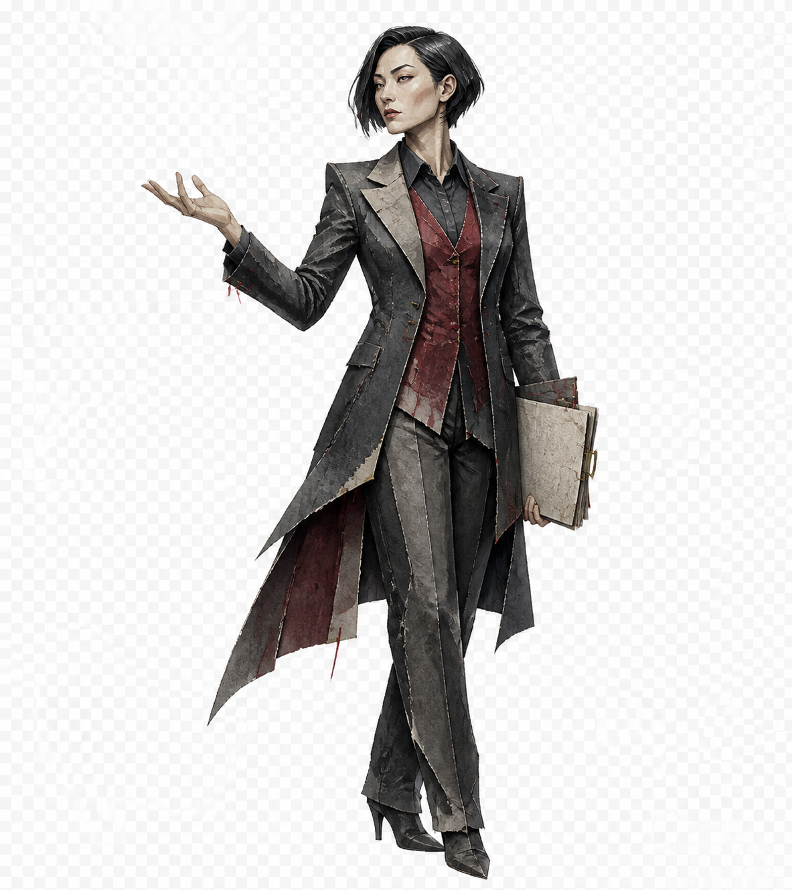
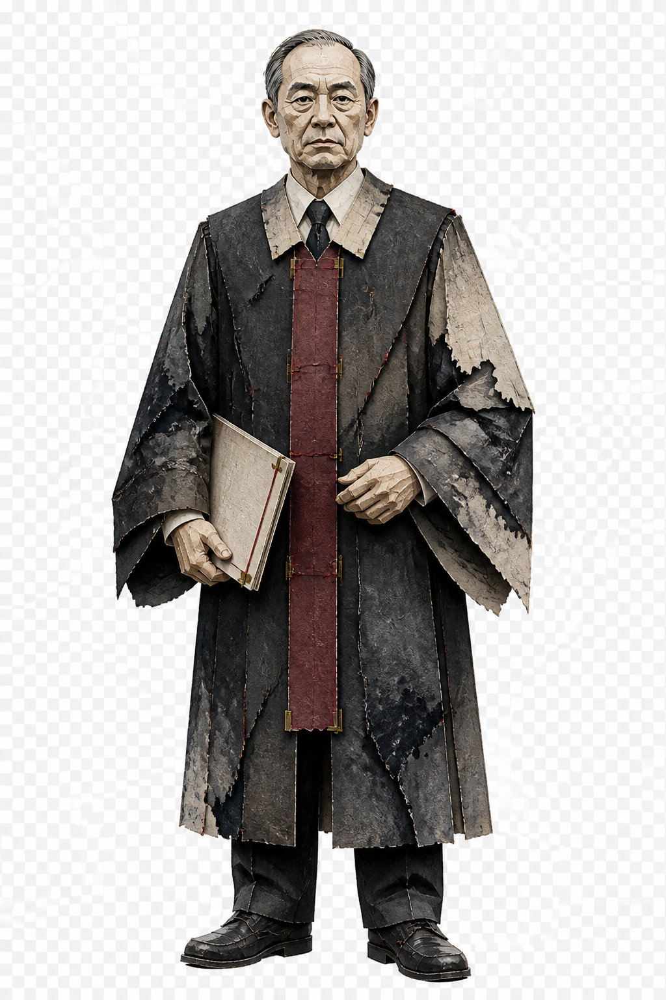

我方代理律师理清证据，陈述事实
对方代理律师下一步：质疑证据
一纸之辩
民事庭审 · 法庭调查
- 开庭准备
- 法庭调查
- 法庭辩论
- 最后陈述
- 调解或宣判
法官心证50/ 100
王建国 · 审判席
第 1 回合伏笔 0
本回合手牌指向卡牌查看 · 单击选中 · 确认出牌



民事庭审 · 法庭调查
先选牌再出牌；Esc 取消选择。自动演示会展示人物、场景和卡牌的反馈。减少动态会停用环境循环、倾斜与飞行。当前人物为原始设定图，棋盘格背景待抠图处理。